Call-a-fal · Adobe MAX · build manual for 3 booths + 1 spare · MS-303 wall phone
Call Center Booth Manual
How to turn a beige MS-303 wall phone, a Raspberry Pi, a 16" screen and a receipt printer into a booth where a visitor lifts the handset, says what they want to see, waits on hold to elevator music, and watches the video arrive. Written for someone who has never soldered.
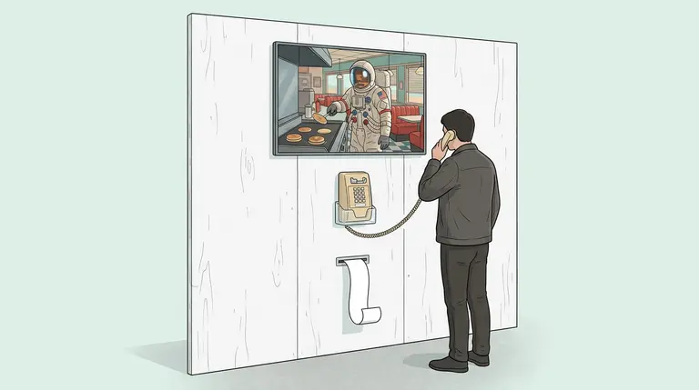
The finished booth: the phone at chest height, the screen above it, the receipt slot below. Everything else hides behind the wall.
How to read this manual
Every step has a Why note (the reason we do it this way) and, where it matters, a Why not note (the other options we considered and rejected). Yellow-bordered Checkpoint boxes are tests you must pass before moving on. If a checkpoint fails, stop there. Fixing a problem is easy now and hard once everything is screwed into a wall.
Part 1
How the booth works
Read time: 5 minutes. No tools.
Before touching anything, it helps to know what each piece does. There are only five boxes and they talk in one direction.
Lift the handset. The hook switch changes position. The Pico (a coin-sized computer inside the phone) notices and "types" the key F8 into the Raspberry Pi, exactly as if someone pressed it on a keyboard.
The booth app hears F8 and plays "Please leave your prompt after the beep" through the USB audio adapter, which is wired to the handset's earpiece.
The visitor speaks. The handset microphone goes back through the same adapter. The app records it, sends it to fal to turn speech into text, then asks fal's video model (H3 Max) for a 10-second clip. If H3 Max is slow or down, FLUX 3 Max takes over by itself.
While it renders, the app plays "Please hold while I connect you to our fastest agent" and elevator music. The clip appears on the screen, muted, in about 10 seconds.
Keypad presses (2 for sound, 3 to regenerate, 0 to print) are also typed by the Pico. Hanging up types F9.
Why it's built this way
Nothing time-sensitive crosses the Wi-Fi. Sound, keypad and screen are all wired straight into the booth's own Pi (handset by USB, keypad through the Pico by USB, screen by HDMI), so nothing about the call itself travels over the network. Only small requests go out to fal. Bad conference Wi-Fi makes a video arrive a little later; it never makes the call break up.
The phone becomes a keyboard and a headset. Computers already understand both, with no special drivers, so there's very little that can go wrong.
The software is one program on each Pi (the "native app"). It reads the phone directly, prints without a driver, keeps the last videos on the Pi so the screen works even with no Wi-Fi, and restarts itself in 2 seconds if anything goes wrong.
Why not
A real phone line (a Grandstream HT801 + a phone number). The voice call itself would travel over the venue internet. Conference Wi-Fi drops data in bursts, which means choppy, one-way or dropped calls. It also can't show a video.
A tablet instead of a Pi and screen. iPads keep asking for microphone permission and drop USB accessories. A Pi boots straight into the booth with no prompts.
An off-the-shelf USB phone. Office USB phones talk to Teams and Zoom, not to our booth, and look like office gear. We keep your landline's look.
Part 2
Ground rules and safety
Read time: 2 minutes.
Never plug the phone into a real phone jack, and never plug its straight cord into anything. A phone line carries up to about 90 volts when it rings. We don't use it at all.
The soldering iron tip is about 350 °C (660 °F). Always put it back in its stand. Work near an open window or a fan; the smoke from the flux irritates your eyes and lungs.
Wash your hands after soldering, especially with leaded solder, and before eating.
Keep the bare Raspberry Pi off metal. The phone's chassis is steel. A Pi touching it, or a loose screw under it, can short-circuit and die. Put the Pi in its case first.
Unplug power before changing wires. Nothing here is dangerous to you (it's all 5 volts or less), but connecting wires while powered can damage the boards.
Why these rules
Every item in this build runs on 5 volts from USB, which can't hurt you. The only hazards are heat (the iron), fumes (the flux) and the phone line, which we never connect. The Pi rule protects the hardware: it's the most expensive part and the one people kill most often by setting it down on something metal.
Part 3
Parts and tools
Unboxing and checking: 15 minutes.
Per booth (4 sets: 3 booths + 1 spare)
Part
What it does
Why this one
Beige MS-303 wall phone (clear cradle, ringer and volume sliders on the front)
The thing people touch
Screws to the wall so it can't be knocked over or carried off. Every booth uses the same model, so one keypad map and one spare fit all.
One box with the Pi, a 45 W power supply, a case with a fan, a heatsink, a 128 GB memory card, a card reader and two micro-HDMI cables. Four identical kits mean the spare is a true drop-in.
ARZOPA Z1FC 16.1" screen (1080p) + a 30 W USB-C charger
Shows the video
The best-tested small screen under $150 (337 nits, measured by PCWorld), and the same 16:9 shape as the videos. Its own charger keeps it at full brightness.
Micro-HDMI to mini-HDMI cable
Pi to screen
The Pi has micro-HDMI and the ARZOPA has mini-HDMI. One cable, no adapters.
Raspberry Pi Pico + USB cable
Turns the hook switch and keypad into key presses
Shows up as a normal keyboard on any computer.
Sabrent AU-MMSA USB audio adapter
Connects the handset to the Pi
Separate headphone and mic jacks, so there's no guessing, and it needs no driver.
2 × 3.5 mm pigtail cables (Fancasee)
A plug on one end, bare wires on the other
Lets you solder the handset wires to a plug.
Rongta 80 mm receipt printer + paper
Prints the receipt when someone presses 0
The booth sends it the receipt directly, with no driver to install.
Spare coiled handset cord
Replacement
The most-yanked part. A swap takes 10 seconds because we keep the phone's handset jack.
Spare microSD card (SanDisk, Samsung or official, 32 GB+)
Backup copy of the Pi's card
A dead card becomes a 2-minute swap.
Shared by all booths
GL.iNet travel router ×2, 8-port switch, Cat6 Ethernet cables, a 5G hotspot or a phone to tether, two battery backups (APC 600 VA), power strips.
A case of 80 × 80 mm thermal paper.
Tools and supplies
Multimeter with a continuity beep (Klein MM325 or similar).
Soldering station with helping hands, 0.8 mm 63/37 rosin-core solder, a flux pen, desoldering braid.
Wire: 26 AWG stranded silicone wire in several colours, and Dupont jumper wires (male-to-female) for testing.
Mounting: ¾" (20 mm) adhesive zip-tie mounts with screws, 4" (100 mm) zip ties, 1" (25 mm) clear heat-shrink (the plain kind, not adhesive-lined) to sleeve the Pico, a heat-shrink assortment for the joints, Kapton tape.
Fine wire strippers, flush cutters, a heat gun, masking tape and a marker, small screwdrivers.
Why not
Mixing phone models. Each model wires its keypad differently, so each would need its own Pico settings, and the spare Pico would only fit one of them.
A bigger monitor inside the booth. A 27" screen won't fit a phone-booth enclosure. The 16" screen sits right above the phone, at reading distance.
A cheaper no-name screen. Unverified brightness and colour. A dim, washed-out screen is the first thing visitors notice.
A USB audio adapter with one 4-pin jack (like Apple's). Which ring is the mic depends on the brand. Separate jacks remove that guesswork.
Part 4
Three skills: meter, solder, shrink
Practice: one evening. Do this on scrap wire or an old gadget first.
4a · The multimeter
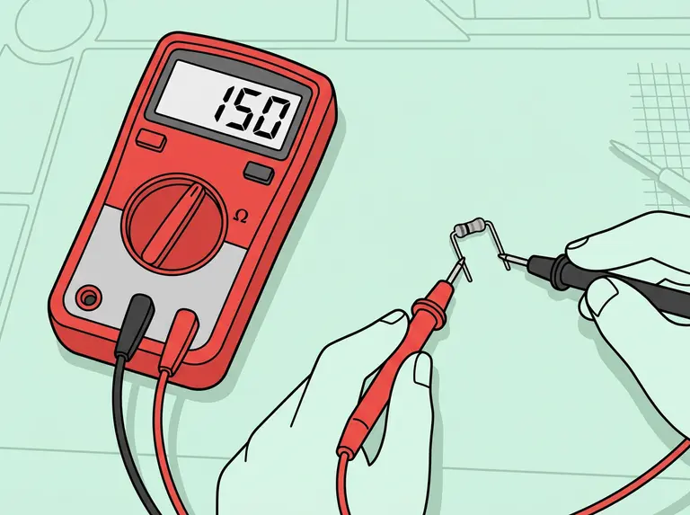
A multimeter measures electricity. We only use three settings of the dial.
Dial setting
Symbol
What it tells you
Where we use it
Resistance, 2k range
Ω
How hard it is for electricity to pass, in ohms
Finding the earpiece wires (they read about 100–300 Ω)
Continuity
a speaker or sound-wave symbol, often shared with ▶|
Beeps when two points are connected
Hook switch and keypad
Diode
▶|
Whether current flows one way only
Checking whether the red light is an LED
Plug the black probe into the socket marked COM and the red probe into the socket marked VΩ (or similar). Leave them there for this whole project.
Turn the dial to continuity and touch the two probe tips together. It should beep. Now you know the meter works.
To test something, touch one probe to each point. On continuity, a beep means "connected". On Ω, read the number.
Why a meter at all
Phone makers use different wire colours and pin orders. Guessing means soldering the wrong wires together. The meter tells you the truth in seconds, and it's how you check every joint afterwards.
4b · Soldering
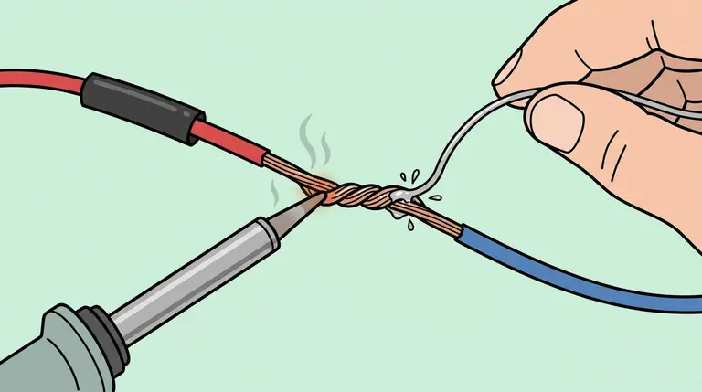
Heat the joint with the iron, feed solder into the other side, and let it flow in. Slide the heat-shrink on first, well away from the heat.
Set the station to 330–350 °C (626–662 °F) for leaded solder (about 370 °C (698 °F) for lead-free). Wet the sponge.
Tin the tip: wipe it on the sponge, then melt a little solder onto it so it shines.
Tin both wires: strip 5 mm of insulation, twist the strands, heat them for a second and touch solder to them so it soaks in.
Join: hold the two tinned wires together in the helping hands, touch the iron to both for 1–2 seconds, add a little solder, then lift the solder away, then the iron.
Don't move anything for 3 seconds while it cools.
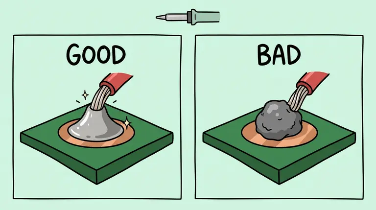
Good: shiny and shaped like a small volcano. Bad: a dull ball sitting on top. A bad joint means it wasn't hot enough or moved while cooling; reheat it.
Why solder (and not tape or twist)
A twisted or taped connection loosens with every handset lift. Thousands of visitors will pull on these wires. A soldered joint is a single piece of metal and doesn't loosen.
Why not crimp connectors or screw terminals
The phone's handset wires are very thin. Crimps sized for them need a special tool, and screw terminals chew thin wire. Soldering is the reliable option at this size.
4c · Heat-shrink tubing
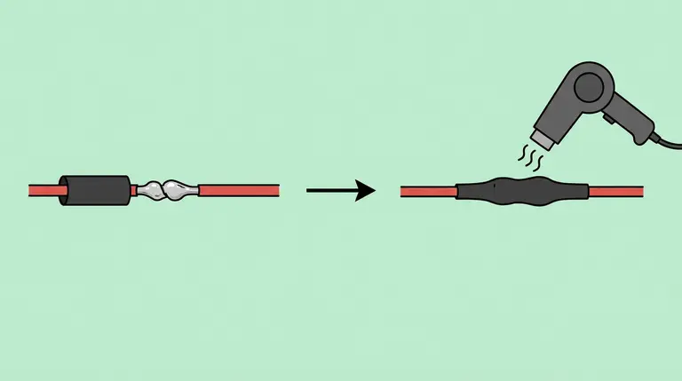
Slide the tube over the finished joint and heat it until it shrinks tight.
Why
It insulates the bare metal so two joints can't touch each other (a "short"), and it stiffens the joint so it doesn't snap when bent. Always slide the tube onto the wire before you solder; you can't add it afterwards.
Checkpoint · skills
Make 5 wire-to-wire joints in a row that look shiny and survive a firm tug. Then you're ready for the phone.
Part 5
Open the phone and label everything
About 20 minutes.
Lay the phone face-down on a towel. Remove the screws from the metal back plate and lift the beige front shell away. Go slowly: the small ringer and volume board on the front shell is still plugged into the inside.
Find each part in the photos below. Put a strip of masking tape on each cable and write its name: HANDSET, KEYPAD, HOOK, FRONT, BUZZER, LINE.
Take a clear photo of the board before you change anything. This is your undo button.
Unplug the white plug from the front panel (it sits on the right side of the main board). That's the only plug on this phone; everything else is soldered, and you'll cut those wires in the next parts.
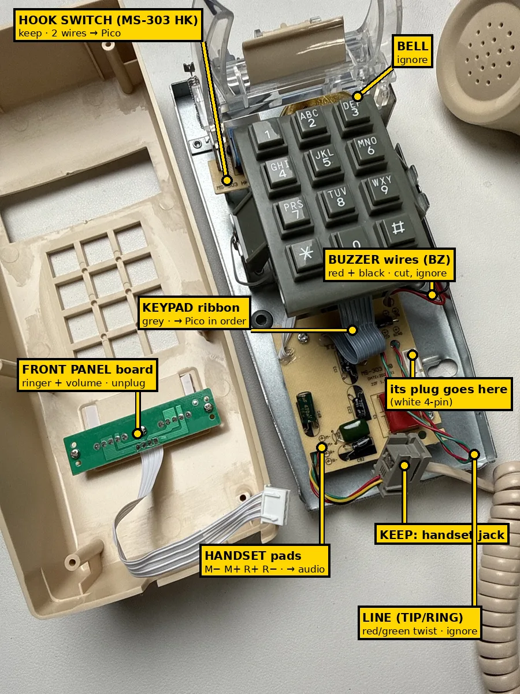
The whole phone. Yellow labels were drawn by hand on your own photo.
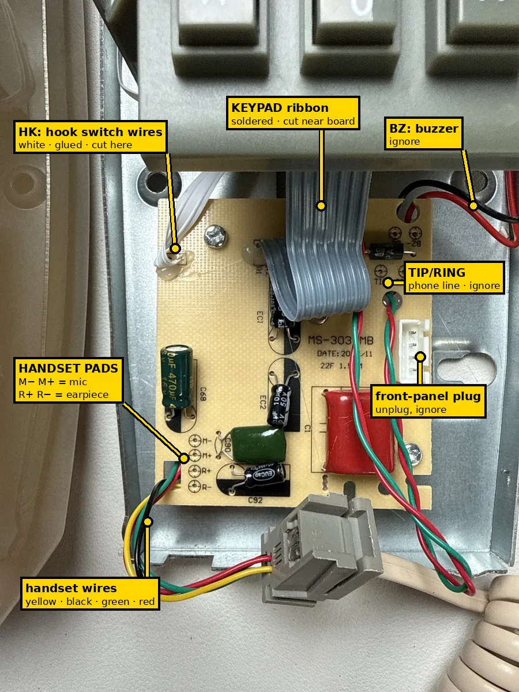
The main board, printed MS-303 MB. The board labels every connection: HK, BZ, TIP, RING, and M−, M+, R+, R− for the handset.
Cable
Board label
Keep or ignore
Handset (yellow, black, green, red, from the grey jack)
M− M+ R+ R−
Keep → audio adapter (Part 6)
Hook switch (white wires from the small MS-303 HK board)
HK
Keep → Pico (Part 7)
Keypad (flat grey ribbon, soldered to the board)
(no label)
Keep → Pico (Part 8)
Front panel: ringer and volume sliders (white plug)
white 4-pin socket
Unplug, ignore (Part 9)
Buzzer (red and black wires)
BZ
Ignore
Phone line (red and green, twisted)
TIP, RING
Ignore
Why the board comes out in the end
Once the handset, hook and keypad wires are cut free, nothing on the board is needed. It was built to run on phone-line power and turn key presses into tones. We want simple on/off signals, which is what the bare switches give us. Keep it in a zip bag so the phone could be restored.
Cut close to the board, never close to the part
Every wire you cut on this phone should be cut right where it meets the main board. That leaves you the most length to work with, and if you need more, you can always add wire. You can't add length to a wire that's too short to reach.
Part 6
Wire the handset to the audio adapter
About 45 minutes the first time.
6a · Identify the four handset wires
On this phone the handset's four wires run from the grey handset jack straight onto four pads printed M−, M+, R+, R−. R is the receiver (the earpiece) and M is the microphone. The wires are soldered from underneath. Measured on the MS-303:
Wire
Pad
What it is
Black
R+
earpiece +
Yellow
R−
earpiece −
Red
M+
microphone +
Green
M−
microphone −
Different from other phones
On the HA9888, green and red were the earpiece. On the MS-303, black and yellow are the earpiece and red and green are the mic. Go by this table, not by colour habits.
Cut the four wires close to the board, so you keep as much length as possible.
Plug the handset into its jack so the coiled cord is connected.
Meter on Ω, 2k. Touch the probes to the bare ends of black and yellow. Expect 100–300 Ω. That's the earpiece.
Now red and green. Read the number, swap the probes, read again. The two numbers should be different. That means it's an electret microphone, the kind the adapter can power.
Checkpoint · handset
Black–yellow reads 100–300 Ω, and red–green reads differently each way round. If black–yellow reads nothing but another pair reads 100–300 Ω, that other pair is the earpiece: use it instead, and the remaining two are the mic.
Why test after cutting here
On a phone with a plug you test before cutting. On this phone the wires are soldered underneath the board, so cutting first is simpler, and the meter still tells you which pair is which before anything gets soldered.
6b · Know your 3.5 mm plug
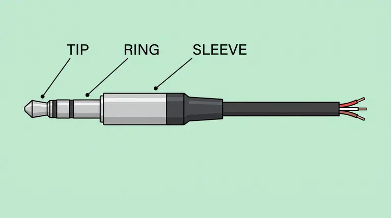
A headphone plug has three metal contacts: tip (the point), ring (the middle band) and sleeve (the last metal section before the plastic handle). The sleeve is always ground.
On the Fancasee pigtails the colours are usually red = tip, white = ring and black = sleeve. Check once with the meter's beep: one probe on the red wire, the other on the very tip of the plug.
6c · Solder
Handset wire
Pigtail wire
Plug part
Earpiece pigtail (plugs into the 🎧 jack)
Black (R+)
Red
tip
Yellow (R−)
Black
sleeve
(none)
White
ring: tape it off
Mic pigtail (plugs into the 🎤 jack)
Red (M+)
Red
tip
Green (M−)
Black
sleeve
(none)
White
ring: tape it off
Strip 5 mm (³⁄₁₆ in) from each of the four handset wires and each pigtail wire.
Slide heat-shrink onto each wire before you solder.
Solder the pairs in the table, then shrink the tubing. Label the plugs EAR and MIC.
Plug EAR into the adapter's headphone jack and MIC into its mic jack.
Checkpoint · audio
Plug the adapter into a laptop. Open a voice recorder, talk into the handset, then play it back with the handset at your ear. You should hear yourself clearly. Mic very quiet or silent? Swap red and green on the mic pigtail; getting it backwards does no harm. Earpiece silent? Recheck black and yellow.
Why tip for the earpiece and not tip + ring
Tip is the left channel, ring the right. Joining them ties the adapter's two outputs together, which can distort the sound or stress the adapter. One channel is plenty for a single earpiece.
Why not cut the coiled cord instead
We keep the phone's own handset jack and the cord's plug. When a visitor yanks the cord out of shape, you swap in a spare cord in 10 seconds instead of re-soldering on the show floor.
Part 7
Find the hook switch
About 15 minutes.
The hook switch is on the small tan board printed MS-303 HK, at the top left under the clear cradle: a blue block with a plunger that the handset presses down when it hangs up. Its white wires run to the spot marked HK on the main board, where they're soldered and covered in glue.
Leave the glue alone. Cut the white HK wires close to the main board, so the full length stays attached to the hook board.
Strip about 3 mm (⅛ in) from each cut end.
Meter on continuity. Touch the probes to two of the wire ends.
Press the plunger in with a finger (that's "hung up"), then let go (that's "lifted").
Try each pair until you find one that beeps in one position only. Write down the two wire colours and whether it beeps pressed or released.
Record for each phone
Your answer
The two hook wires
______ and ______
Beeps when the plunger is…
pressed / released
What the answer means for the Pico
If it beeps when released (handset lifted), the switch closes on lift: keep OFF_HOOK_READS_HIGH = False in the Pico's code.py. If it beeps when pressed (hung up), change it to True. Every MS-303 should give the same answer, but check each one.
Why only two wires
A switch is just two metal contacts that touch or don't. The Pico only needs to know which, so it needs only the two contacts that change. Any extra wire was for the old phone circuit.
Part 8
Free the keypad ribbon
About 15 minutes here, 10 more in Part 10.
Twelve buttons, but only about seven wires. That's because the keypad is a grid: four row wires and three column wires. Pressing a button connects one row to one column.
On this phone the grey keypad ribbon is soldered straight to the main board, with no plug. Leave the keypad screwed in place.
Cut the ribbon close to the main board, so its full length stays attached to the keypad.
Count the wires and number them 1, 2, 3… from one edge. If one edge has a coloured stripe, that's wire 1. If not, call the edge nearest the phone's left side wire 1, and mark it with a dot of marker.
Peel the wires apart about 3 cm (1¼ in) and strip 3 mm (⅛ in) from each.
You don't need to map it with the meter
Keypads like this press a carbon pad onto the board. A pressed key reads a few hundred to a few thousand ohms, which is too much for the meter's beeper, so the beep test usually finds nothing. Instead, wire the ribbon to the Pico in order (Part 10), and the Pico works out which wire is which row and column by itself.
Why a grid
Twelve separate switches would need 13 wires. A grid needs 7. The Pico scans the grid many times a second ("is row 1 touching column 1? column 2?…") and works out which key is down.
Part 9
The front panel: ringer, volume, label window
5 minutes.
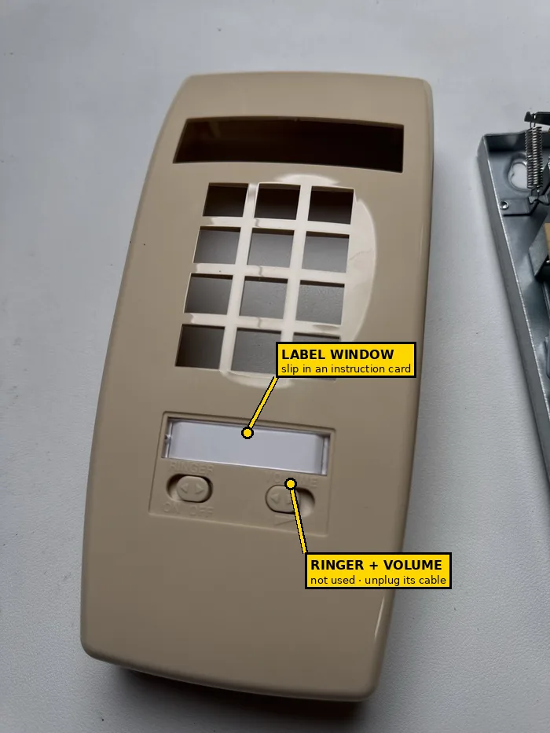
The front shell. The sliders stay for looks; the label window becomes your instruction card.
Ringer and volume: the small green board behind them is already unplugged (Part 5). Leave it screwed to the front shell so the sliders stay in place, and tuck its cable inside or snip it off at the plug. Nothing rings without a phone line, and the earpiece volume now comes from the Pi.
Label window: the white strip under the keypad is where a phone's own number used to go. Print a card for it, for example "Pick up · say what you want to see · 2 sound · 3 again · 0 receipt", or the Call-a-fal mark.
Why use the label window
It's exactly where people look while they dial. A short instruction there answers "what do I do?" before anyone has to ask.
Why not make the volume slider work
The Pico could read it, so visitors set their own earpiece loudness. It's possible, but it adds wiring and one more thing to fail. Set the volume once in the Pi's settings instead.
Part 10
Set up and wire the Pico
10 minutes of setup, 30 minutes of wiring.
10a · Give it its program
Hold the white BOOTSEL button on the Pico while plugging its USB cable into your laptop. A drive called RPI-RP2 appears.
From circuitpython.org, download the latest stable .uf2 file for the board "Pico" by Raspberry Pi and drag it onto RPI-RP2. The drive restarts as CIRCUITPY.
Copy everything in the project's booth/pico/ folder onto CIRCUITPY: code.py, keymonitor.py, keyfinder.py and the lib folder (it already holds the keyboard library). The project is on GitHub: lizzieoh/hello-world, branch claude/landline-demo-booth-setup-05lxch.
Using a Pico W? Download the "Pico W" file in step 2 instead. Everything else is the same.
Why CircuitPython
The program is a plain text file you can open and edit on the drive itself. Change a setting, save, and the Pico restarts with it. No special software to install.
10b · Wire it
Hold the Pico with the USB plug pointing up and the components facing you. The pins are numbered from 1 at the top-left, down the left side to 20.
Keypad: solder the ribbon wires to the Pico in order: wire 1 → GP0 (pin 1), 2 → GP1 (pin 2), 3 → GP2 (pin 4), 4 → GP3 (pin 5), 5 → GP4 (pin 6), 6 → GP5 (pin 7), 7 → GP6 (pin 9). More wires continue on GP7 (pin 10), GP8 (pin 11) and GP9 (pin 12). You don't need to know which wire is a row or a column; the key monitor in 10c works that out. On a Pico without pins, push each wire through its hole from the top and solder underneath. On one with pins, wrap the wire once around the pin, down near the plastic, and solder at 350 °C (660 °F), because the pins soak up heat. If a wire falls short, extend it with 26 AWG wire about 10–15 cm (4–6 in) long, with heat-shrink over the joint.
Hook: solder the two hook wires you found in Part 7 to GP15 (pin 20) and GND (pin 18). Either wire can go to either pin.
After each joint, put the meter on beep and touch the two neighbouring pins: they must stay silent. A beep means solder is bridging them. Pins are only 2.54 mm (0.1 in) apart.
If you've cut pins short, use flush cutters and trim just above the joint, never flush with the board. Cover the pin with a finger as you cut; clipped pins fly.
10c · Let the Pico map the keypad (the key monitor)
Only the keypad needs to be wired for this; the hook switch can wait. Make sure keymonitor.py is on CIRCUITPY next to code.py.
Open code.py on CIRCUITPY. Change FIND_KEYS = False to FIND_KEYS = True and save. The Pico restarts as a key monitor. It reports over USB every time two ribbon wires touch.
With Claude running on the Mac (Part 10a's teleported session), say "map the keypad". Claude reads the Pico's reports and asks you to press each key in turn. It then writes the right ROW_PINS and COL_PINS into code.py and sets FIND_KEYS back to False.
Why this works when the meter didn't
The Pico tests every pair of wires itself, hundreds of times a second, and notices a connection even through a carbon pad's few thousand ohms. It handles up to 15 wires, so extra keypad wires are no problem.
Map it once for all four phones
Every booth uses the MS-303, so its keypad is wired the same way in every phone. Map phone 1, then copy that same code.py to the other three Picos and just press every key to check.
10d · Close up the phone
Insulate the Pico: slide it into a 7 cm (2¾ in) piece of 1" (25 mm) clear heat-shrink with the USB end open, and shrink it with the heat gun on low. The phone's back plate is metal, and a bare Pico touching it can short out.
Fix it in place: stick a ¾" adhesive zip-tie mount on the plastic or on Kapton tape over the metal, and zip-tie the sleeved Pico to it. Add a screw through the mount where you can. Mount the audio adapter the same way. Wipe each spot with isopropyl alcohol first and press each mount for 30 seconds.
Strain relief: zip-tie the wire bundles right next to the Pico, so a tug pulls on the ties and never on a solder joint.
Cables out: point the Pico's USB port toward the back plate's old phone-line opening. Run both USB cables out through it and anchor them inside with a zip tie.
Remove the old main board and bag it. Close the phone.
Why the phone never needs opening again
New Pico settings go on over its USB cable: its drive appears on the Pi or a laptop like a USB stick. Once it's closed, it stays closed.
Checkpoint · Pico
Plug the Pico into your laptop and open any text editor. Lift the handset: the Pico's small LED lights. Hang up: it goes out. With the handset lifted, press every key; each one types its own character. Keys are ignored while the phone is hung up, so if the hook isn't wired yet, join pin 20 and pin 18 with a jumper wire: the Pico then thinks the handset is lifted (the hook itself types F8 and F9, which you won't see in a text editor). If the LED is lit with the handset down, open code.py and flip OFF_HOOK_READS_HIGH (see Part 7). If a digit comes out wrong, fix the LAYOUT list in code.py rather than re-soldering.
Why the Pico types keys
Every computer understands a keyboard. The Pi doesn't need any driver or setup; the booth app just listens for F8, F9 and digits. If anything goes wrong you can test the whole booth with a normal keyboard.
Why not wire the switches straight to the Pi's pins
It's possible, but then the Pi's fragile pins sit at the end of wires that visitors tug on. The Pico costs a few dollars, plugs in by USB, and keeps the phone and the computer independent: you can swap either one in seconds.
Part 11
Set up the Raspberry Pi
About 40 minutes, mostly waiting.
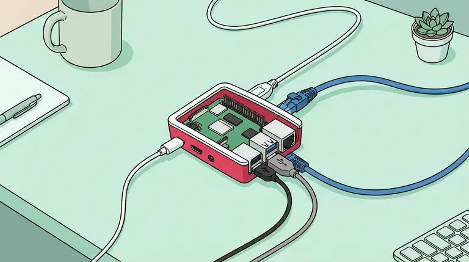
The Pi in its case, with power, screen, network and USB connected.
11a · Assemble the CanaKit
Press the heatsink onto the Pi's main chip. Plug the fan's small connector into the socket labelled FAN on the Pi.
Seat the Pi in the case and close it.
Why cooling matters
Behind a screen in a warm booth, a Pi without a fan slows itself down to cool off. The booth software sets a stronger fan curve and writes the temperature to its log every minute, so heat problems show up before visitors notice.
11b · Write the memory card (on your laptop)
Install Raspberry Pi Imager from raspberrypi.com/software and put the kit's memory card in its card reader.
Choose Device: Raspberry Pi 5 · OS: Raspberry Pi OS (64-bit), the one with desktop · Storage: your card.
Click Edit settings: hostname fal-booth-1, username booth with a password you'll remember, your Wi-Fi for now, and on the Services tab enable SSH.
Click Write and wait about 10 minutes.
Why rewrite a card that came pre-loaded
Imager adds the booth's name, the login and remote access in one go, so you can manage the Pi from a laptop at the venue without plugging in a keyboard.
11c · First boot and booth setup
Put the card in the Pi. Connect the screen to the micro-HDMI port right next to the USB-C power port, using the micro-HDMI to mini-HDMI cable. Connect a keyboard, Ethernet, the USB audio adapter and the Pico. Plug the screen into its own charger. Plug in the Pi's power last.
When the desktop appears, open Terminal and type these lines one at a time, pressing Enter after each:
The 1 is the booth number: use 2, 3 or 4 on the other Pis. It asks for the fal API key once (the letters don't show while you paste; that's normal), then runs a self-test that should end with every test passed.
What setup-native.sh does, and why
Starts the booth at power-on, full-screen, so nobody touches a mouse at the venue.
Reads the phone directly. No window can steal the keypad's focus.
Prints without a driver. The receipt goes straight to the printer.
Keeps the last 12 videos on the Pi, so the screen between calls works even with no Wi-Fi.
Heals itself. If the app ever stops, it's back in 2 seconds; if the video player crashes mid-call, the app reopens it and puts the video back.
Sends all sound to the handset every time it starts, so a replugged adapter still works.
Checkpoint · Pi
After the reboot: a dark screen that says "Pick up the phone." with a green dot at the top left. Lift the handset and you hear a ring, a click, then "Please leave your prompt after the beep." Speak, wait on hold, and the video appears, muted.
11d · Settings and fixes
Settings live in ~/hello-world/booth/native/native.conf. After a change, hold * on the phone for 3 seconds to restart the app.
Symptom
Fix
Earpiece too quiet
Raise SPEAKER_VOLUME in native.conf.
The agent mishears, or there's an echo
Lower MIC_VOLUME.
No sound at all
Run grep sink= ~/hello-world/booth/native/booth.log. It should name a USB device. If not, reseat the adapter.
Lifting the handset does nothing
grep "phone keys" booth.log should name the Pico. If not, replug it.
Need to see what happened
tail -50 ~/hello-world/booth/native/booth.log
Why not the browser version
The booth also exists as a web page (booth/pi/setup.sh), and it's kept as a fallback. In a browser, the keypad only works while its window is in front, the printer needs a driver, and the screen between calls needs Wi-Fi. The native app has none of those weak spots.
Why not a Mac mini
A Mac mini would also work, but costs about ten times as much per booth, is harder to lock into a single full-screen app, and loses its settings when updates run. The Pi does this one job reliably.
Part 12
Connect the receipt printer
About 15 minutes.
Pressing 0 prints a receipt: the prompt, black-and-white stills from the video, the time and a QR code to the video. It's laid out for 80 mm paper, and the booth sends it to the printer directly, with no driver to install.
Paper: open the lid and drop the roll in so the paper comes off the bottom of the roll toward you. Pull out about 5 cm (2 in) and close the lid firmly until it clicks. The auto-cutter trims the end.
The printer's own self-test: with the printer off, hold the FEED button, switch it on, and let go once it starts printing. It prints its settings page. That proves the printer, paper and cutter work before the Pi is involved.
Plug it into the Pi by USB (the square USB-B port on the back). Don't use the port that looks like a phone jack: that's for a cash drawer. With phone cords all over the bench, it's an easy mix-up.
Test print from the Pi. In Terminal:
ls /dev/usb/
cd ~/hello-world/booth/native
venv/bin/python booth.py --test-print
ls /dev/usb/ should show lp0, which is the printer. The last line prints a receipt with a striped test pattern and cuts it. Then make a real call and press 0.
If ls /dev/usb/ shows nothing
Check the printer is switched on, then replug its USB cable and run it again. If it's still empty, run lsusb and send Claude what it lists.
No Pi yet? Test it from the Mac
Plug the printer into the Mac. In Terminal, lpinfo -v | grep usb lists it as a line starting usb://. Copy that address, then run sudo lpadmin -p rongta -E -v 'usb://…paste…' -m raw. Then, from hello-world/booth/native: BOOTH_PRINTER=rongta python3 booth.py --test-print.
Why an 80 mm receipt printer
The receipt is exactly 576 dots wide, the printing width of standard 80 mm paper. Receipt printers are built to run all day in shops, cut automatically, and the paper is sold everywhere.
Why not a photo printer
A different paper size from the receipt design, and slow: a colour printer like the Canon Selphy takes about 41 seconds per print.
Part 13
The booth network
About 30 minutes at home, 10 at the venue.
Plug in the router. On a laptop, join its Wi-Fi and open 192.168.8.1. Set an admin password.
Internet → Repeater: join your home Wi-Fi for now. At the venue you'll change only this one setting to the show's network.
Internet → Tethering: plug in the hotspot or phone by USB. Turn on Multi-WAN with Repeater first and Tethering second.
Router → switch → each Pi, all by Ethernet.
On each Pi, switch its own Wi-Fi off so it can't wander onto the busy hall network: sudo nmcli radio wifi off.
Save a backup of the router's settings and load it onto the spare router.
Why your own router
Conference Wi-Fi is crowded and changes. With your own router, you set up everything at home and change one setting at the venue, instead of three Pis. If the venue Wi-Fi drops, the router switches to the hotspot by itself.
Why not Wi-Fi on each Pi
A crowded hall has hundreds of phones fighting for the same airwaves. A cable doesn't. Ethernet is the single biggest reliability win in the whole build.
Ask the venue first
Many convention centres ban exhibitors from running their own Wi-Fi network or hotspot. Ask Adobe in writing. If it's banned, turn off the router's own Wi-Fi (repeater mode still works) and ask whether the backup hotspot is allowed.
Part 14
Mount it in the booth
About an hour per booth, once the booth shell is built.
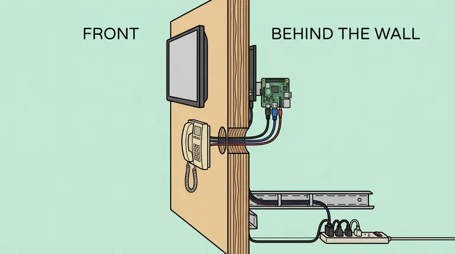
Visitors see only the phone, the screen and the receipt slot. The Pi, cables and power live behind the panel.
Panel: plywood or MDF at least 12 mm (½ in) thick, or the back wall of a payphone-style booth.
Phone: keep the handset and keypad no higher than 122 cm (48 in) from the floor, the US accessibility (ADA) limit for public phones. Screw the phone's metal back plate to the panel through its keyhole slots with wood screws.
Cable hole: drill a 25 mm (1 in) hole behind the phone's old phone-line opening. Both USB cables pass through it.
Screen: mount the 16" screen directly above the phone, at eye level, tilted slightly down so booth lights don't reflect in it. It has no wall-mount holes, so hold it with a clamp bracket or set it into a cut-out in the panel. Zip-tie its cable at both ends.
Pi: screw its case behind the panel, near the screen. Leave the fan room to breathe.
Printer: behind the panel, with only its paper slot showing through a cut-out below the phone, like a payphone's coin return.
Power: the Pi, screen and printer chargers to a power strip; the Pis and the network gear on the battery backups. Plug the battery backups straight into the wall.
Why hide everything
Anything a visitor can reach, a visitor will touch, unplug or lean on. Hidden cables can't be tripped over, and a wall-mounted phone can't be knocked off a table or walked away with.
Why not adhesive strips or a fabric wall
A handset gets lifted and slammed thousands of times a day. Adhesive creeps and fabric walls flex. Screws into wood hold.
Part 15
Make units 2, 3 and the spare
Phones: about an hour each. Pis: 20 minutes each.
Phones: repeat Parts 5–10 for each phone. They're all the MS-303, so the wire colours, hook wires and keypad map match phone 1: copy phone 1's code.py to each Pico. Still run every checkpoint.
Pis: shut down Pi #1, then copy its SD card onto three more cards (Raspberry Pi Imager, or "SD Card Copier" on another Pi). On each copy, change the name and line number: run sudo raspi-config nonint do_hostname fal-booth-2, set LINE=2 in ~/hello-world/booth/native/native.conf, and reboot. (Or run Part 11's setup on each Pi with its own number; it takes about 10 minutes.)
Spare cards: make a second copy for each Pi and tape it inside that Pi's case.
Label everything 1, 2, 3 or S: phone, Pico, Pi, memory cards, chargers and both ends of every cable.
Why copy instead of setting up each Pi
Copies are identical, so if Line 1 works, Lines 2 and 3 work the same way. It's also how you recover on show day: swap in the spare card and you're back in two minutes.
To change settings later: sudo raspi-config nonint do_overlayfs 1, reboot, make the change, lock it again.
Why
At a trade show, someone will pull a power cord. A read-only card can't be corrupted by that, and every boot is identical to the last.
16b · The burn-in checklist (all three booths on one router)
50 full calls per phone: lift, speak, video, press 2, press 3, press 0, hang up.
Slam the handset down. Leave it off the hook for 10 minutes (you should hear the busy signal).
Mash the keypad while the phone is hung up: nothing should happen.
Press 2 or 3 while a video is still rendering: nothing should break.
Pull a Pi's power mid-call: it comes back to the booth by itself within a minute.
Unplug the router's internet: the dot at the top left turns red, calls get a busy signal, and everything recovers by itself when it's back.
Turn off the home Wi-Fi: calls keep working over the hotspot.
Play loud crowd noise nearby: the system still understands you.
Unplug a screen's power and plug it back in: it switches itself back on.
Wipe the handsets with alcohol wipes: nothing breaks.
Why 24 hours
Most failures (a loose joint, a memory leak, an overheating board) only show up after hours of use. You want to find them at home, not in front of visitors.
Part 17
Show day
Setup (30 minutes)
Power order: battery backups → router → switch → screens and printers → Pis.
On the router, switch Repeater to the show's Wi-Fi and accept any sign-in page.
Make a test call on every line, including printing a receipt.
When something goes wrong
What you see
Do this
Screen stuck or strange
Lift the handset and hold * for 3 seconds: the app restarts in a few seconds. Still stuck: hold # for 5 seconds to shut down, wait for the Pi's green light to stop blinking, unplug it for 5 seconds, plug it back in.
Red dot at the top left, or "lines are busy" on every call
The internet or fal is down. Check the router from your phone; force it onto the hotspot.
Earpiece silent
Reseat the audio adapter's USB, then restart the app (hold *).
Lifting the handset does nothing
Reseat the Pico's USB. Its LED should follow the hook.
"Printer offline"
Check the paper and replug the printer's USB, then press 0 again.
Screen black after a power blip
Press the screen's power button.
The feed of earlier videos needs clearing
Dial *123#. They're archived, not deleted.
Anything else
Swap in the spare unit. Debug after the show.
Why "swap first, debug later"
A visitor-facing booth has to be back up in minutes. Every spare part is identical, so swapping always works; debugging on the floor rarely does.
Go-bag
Spare complete unit and spare router
Spare memory cards (labelled), chargers and handset cords
Extra Ethernet, micro-to-mini HDMI and USB cables
USB keyboard, multimeter, small screwdrivers, gaffer tape, zip ties
Receipt paper, alcohol wipes, foam mic covers
This manual, printed
Part 18
Reference
Booth settings (native.conf)
Setting
Default
Effect
LINE
1
The line number on the screen and the receipt
SECS
10
Clip length, 5 to 15 seconds. 8 is about 3 seconds faster.
MODEL
h3
h3: H3 Max first, FLUX 3 Max as backup. flux: the other way round.
LANGUAGE
en
auto detects the visitor's language (a little slower).
SPEAKER_VOLUME, MIC_VOLUME
85, 90
Handset levels in percent
What the phone types
Phone action
Key
What the booth does
Lift handset
F8
Ring, greeting, beep, listens
Press # while speaking
#
Stops listening early
Press 2
2
Sound on or off; turning it on restarts the clip
Press 3
3
A new take of the same prompt
Press 0
0
Prints the receipt (once per video)
Hang up
F9
Goes quiet; the screen returns to recent videos
Hold * for 3 s
Ctrl+R
Restarts the app (staff)
Hold # for 5 s
F10
Shuts the Pi down safely (staff)
Dial *123#
digits
Clears the feed of earlier videos (staff)
Glossary
Continuity: whether two points are connected; the meter beeps if they are.
Electret microphone: a tiny microphone that needs a little power from the adapter to work.
GND (ground): the shared "zero" wire every circuit returns to.
Heat-shrink: plastic tube that shrinks with heat to insulate a joint.
Matrix (keypad): a grid of row and column wires; each key connects one row to one column.
MS-303: the wall phone model used in every booth; its boards are printed MS-303 MB (main) and MS-303 HK (hook switch).
Pico: a small programmable board that acts as a USB keyboard in this build.
Short (short circuit): two things touching that shouldn't; the cause of most dead boards.
Tip / ring / sleeve: the three metal contacts of a headphone plug.